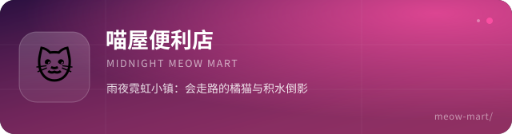
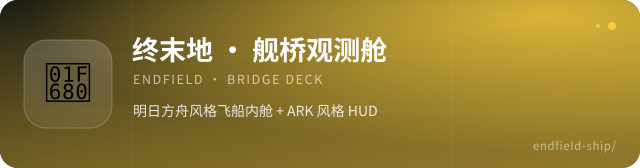
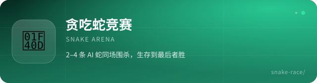
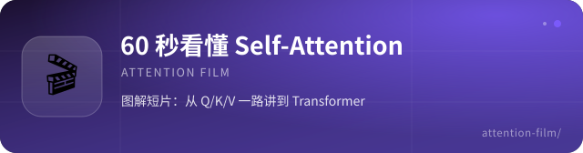
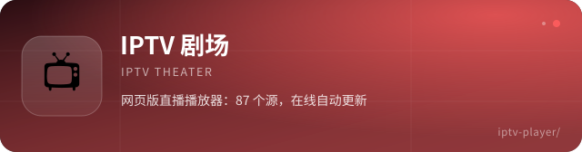
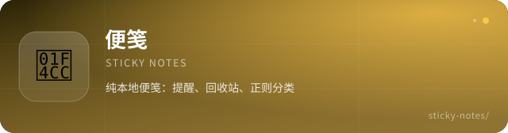
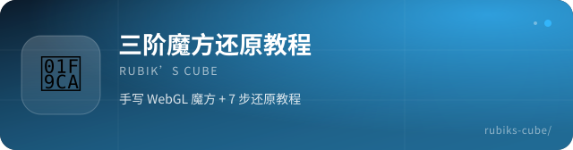
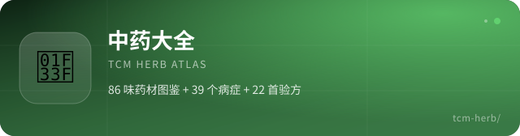
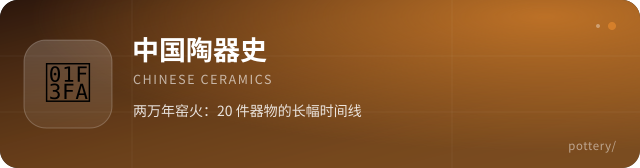
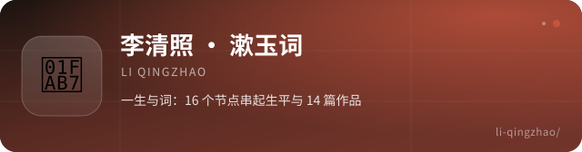
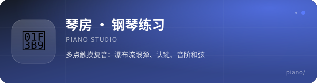
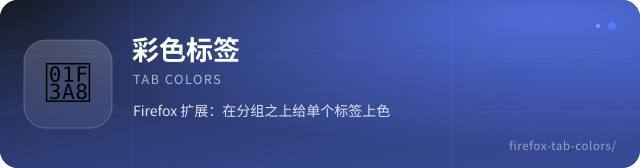
WebExtension 没有 per-tab 颜色，只能内容脚本改标题前缀 + 换彩色图标
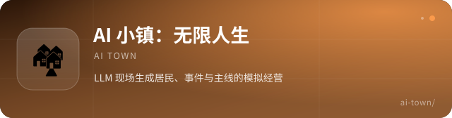
17 种结局，全 NPC 可自动玩，离线也能跑
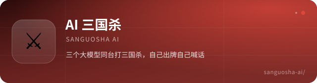
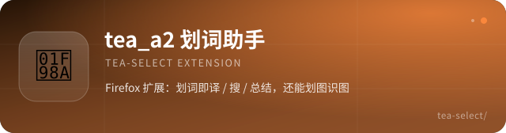
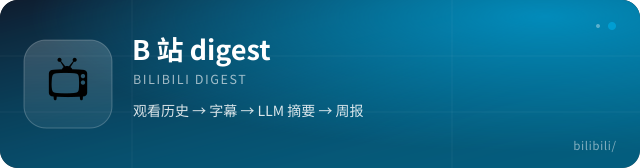
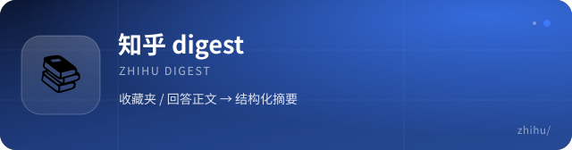
写操作默认 dry-run，加 --yes 才真投递
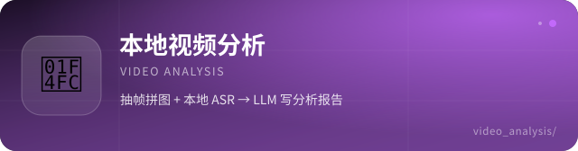
3×3 拼图每格烧了时间戳，ASR 全离线跑在 CPU 上
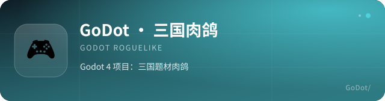
场景、脚本与像素素材都在仓库里
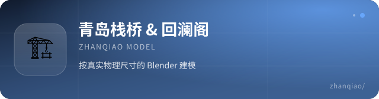
build_zhanqiao.py 生成模型，verify.py 复核尺寸